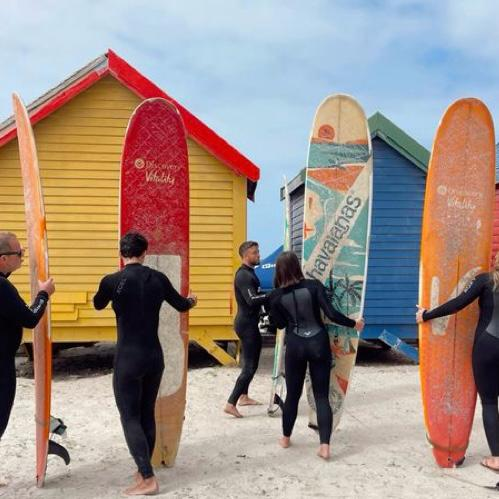
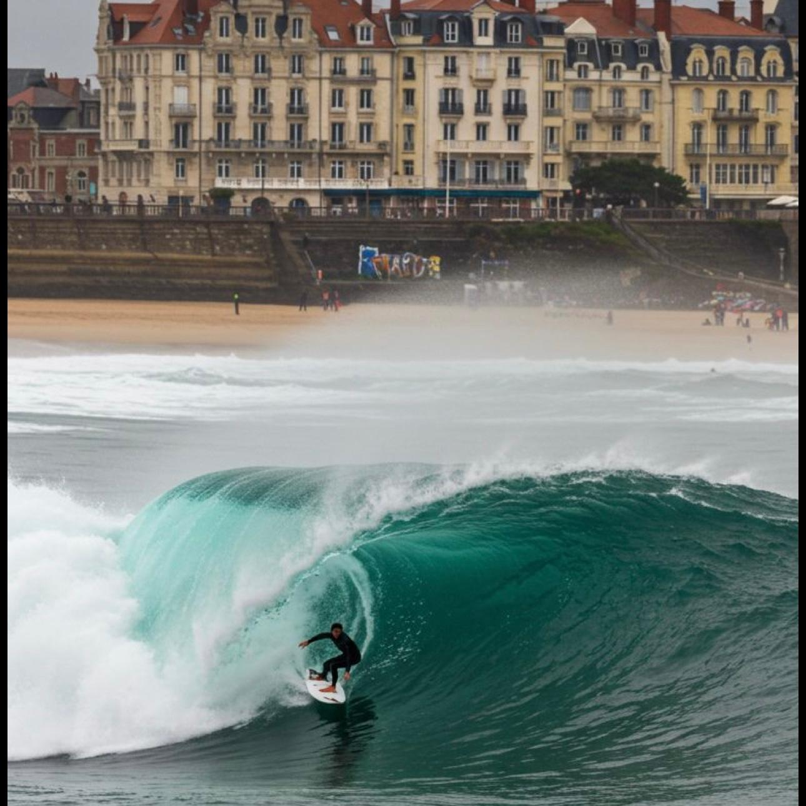

Kaapstad – Zuid Afrika
Kaapstad is één van mijn favoriete surfspots omdat je hier surft met de bergen op de achtergrond
en de oceaan voor je. De golven zijn krachtig en afwisselend, waardoor het nooit saai wordt.
Na het surfen voelt het bijna als vakantie: zon, zee en een relaxte vibe die perfect past bij
het leven rond het strand.

Uluwatu – Bali
Uluwatu is voor mij echt zo’n plek waar surfen voelt als vrijheid. Je surft hier boven helderblauw
water met kliffen om je heen, wat het extra speciaal maakt. De golven zijn snel en krachtig en dagen
je echt uit. Na het surfen zit je zo bij een strandtentje met een kokosnoot en voelt alles even heel
relaxed.

Lagos – Portugal
Lagos vind ik zo fijn omdat je hier altijd wel een strand met goede golven kan vinden. De kust is
super afwisselend en de sfeer is laid-back. Surfen voelt hier ontspannen, maar je kan jezelf ook
blijven pushen. Het is zo’n plek waar je de hele dag op het strand hangt zonder je te vervelen.

Bayonne – Frankrijk
Bayonne voelt voor mij als een perfecte mix van stad en surf. Je zit dicht bij de oceaan, maar ook
bij gezellige straatjes en terrassen. De golven zijn betrouwbaar en ideaal om lekker lang het water
in te gaan. Na het surfen nog even door de stad lopen maakt het extra leuk.

Biarritz – Frankrijk
Biarritz is echt een klassieke surfspot met een chille maar ook levendige sfeer. Je surft hier
midden in de stad, wat het heel uniek maakt. De golven zijn sterk en clean en er hangt altijd een
echte surfcultuur. Het voelt hier alsof surfen gewoon onderdeel is van het dagelijks leven.

Taghazout – Marokko
Taghazout is zo’n plek waar alles om surfen draait. Je staat op, pakt je board en bent de hele dag
bezig met de oceaan. De golven zijn lang en perfect om echt flow te vinden. De vibe is super relaxed
en je leeft hier echt in een surf-ritme.